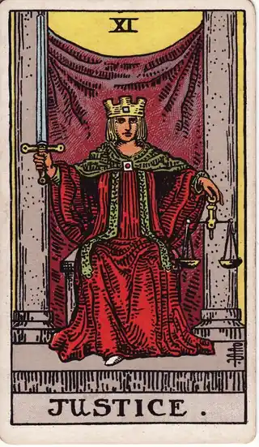

READING
無料タロット診断の種類と違い——当たる感の正体と決断への使い方
・ DECIDE. 編集部

「無料でタロット診断ができた」「言い当てられて鳥肌が立った」。最近、SNSでそんな投稿をよく見かけます。話題になっているのは、自分の再生履歴と組み合わせる新しいタイプの無料タロット診断です。ふだん聴いている曲や、読んだ本、観た映画をもとにカードを引き、結果には自分の好きな作品が根拠のように添えられる。だから「なんで分かるの」と感じやすい作りになっています。
先に言っておくと、無料タロット診断そのものが悪いわけではありません。問題は、診断にも種類があることを知らないまま使うと、結果の受け取り方を間違えることです。この記事のゴールは、いま流行っている診断の仕組みと「当たってる」感の正体を知って、迷いを決断に変えたいときはどの種類を選べばいいかを持ち帰ることです。
POINT 01 いま流行っている無料タロット診断の中身
流行中の診断の流れは、だいたい共通しています。スポティファイなどの再生履歴と連携し、恋愛・仕事・未来といったテーマから質問を選ぶ。そして過去・現在・未来の3枚のカードを引き、最後に一言の断定文で結果が示されます。たとえば「あなたは変わり目の時期にいます」という一文に、最近聴いていた曲や繰り返し観た映画が「根拠」として並ぶのです。
従来の無料診断との違いは、材料が生年月日や名前ではなく「自分の行動の記録」だという点です。自分のデータで作られた文章は、自分に向けられた言葉に感じやすい。無料で、登録なしでも試せて、結果画面がそのままシェアできる。広まり方の設計も含めて、よくできた仕組みだと思います。
ただし、ここで一度立ち止まってください。その「当たってる」という感覚は、どこから来ているのでしょうか。
POINT 02 「当たってる」と感じる理由は3つある
1つ目は、材料が自分の情報だからです。再生履歴も、選んだ質問も、全部自分のもの。文章が自分に寄って感じられるのは当然で、「当てられた」というより「自分の材料で作られている」と言ったほうが正確です。
2つ目は、言い回しに余地があるからです。「本当の気持ちに気づくときです」「変化の時期が来ています」といった表現は、多くの人の、多くの時期に当てはまります。誰にでも当てはまるはずの言葉を、自分にだけ当てはまると感じる性質は、心理学でバーナム効果と呼ばれています。診断の文章が上手なほど、この余地は意図的に残されています。
3つ目は、質問が先に絞られているからです。選択式の質問に答える時点で、答えの方向はかなり決まっています。「恋愛で迷っている」と選んだ人に、仕事の話は出てこない。診断は、その方向に沿った言葉を渡しているにすぎません。
つまり「当たる・当たらない」は、診断を評価する物差しとしてあまり意味を持ちません。大切なのは仕組みを知ったうえで、それを何に使うかです。そこで、診断の種類の話をします。
POINT 03 診断には3つの種類がある
同じ「タロット診断」でも、役割の違う3種類が混ざっています。
- 当てる型：未来や相手の気持ちを言い当てるもの。結果は受け取るだけで、当たったかどうかを後から確かめる方法はありません。楽しむためのものとして割り切るならよいのですが、決断の根拠にはなりません
- 映す型：カードや結果を鏡にして、自分の気持ちを言葉にするもの。答えは自分の中にあるという前提です。迷いの整理には使えますが、得た気づきはその場かぎりで消えやすいのが弱点です
- 決める型：視点を得たあと、自分で選び、その理由と一緒に残しておくもの。後から見返して「あのとき、なぜそう決めたか」を確かめられます。決断の道具として使えるのは、この型だけです
再生履歴と組み合わせる流行の診断は、当てる型の見せ方をした映す型、というのが実態に近いでしょう。自分のデータが映し出されるから心は動く。でも、決める型の要素——選んだ記録と理由——は含まれていません。無料かどうかよりも先に、この種類の違いで選ぶことが大切です。
POINT 04 カードの視点で見る

月は、暗がりで物を見るカードです。はっきり見えないからこそ、見たいものを映し込みやすい。「当たってる」という感覚が生まれる場所は、まさにこのカードの世界です。月が示すのは、結果を疑えということではありません。光が弱い場所では、確かめられる事実と、想像で補っている部分を分けて見る。その一手間が、映す型を使いこなすコツになります。
女教皇は、帳の向こうにある知識、つまり自分の内側の声を表すカードです。映す型の核心はここにあります。理由をすぐに説明できなくても、「なんとなく気になる」は本物の手がかりです。診断の結果文に頷けたのだとしたら、それは当てられたからではなく、もともと自分の中にあった気持ちに言葉が付いたからかもしれません。

正義は、天秤と剣を持つカードです。天秤は、二つの選択肢を同じ基準で量ること。剣は、量ったうえで自分で断ち切ること。決める型の姿勢はこの姿です。どちらが正しいかではなく、同じ物差しで比べて、自分にも説明できる理由のある方を選ぶ。その理由が残っていれば、結果がどう転んでも「自分の決断だった」と引き受けられます。
POINT 05 決断に使うなら、「記録が残るか」で選ぶ
診断の結果は、その場の気持ちを動かしてくれます。でも、決断の質を決めるのは結果の当たり外れではなく、「なぜそう決めたか」を後から確かめられるかどうかです。理由が残っていれば、結果が思い通りでなくても「あの時点では妥当な判断だった」と振り返れる。逆に理由が残っていないと、人は結果だけで過去の自分を裁き、同じ迷いを繰り返します。理由を1行残すだけの効果については、決断の理由を1行メモするだけで、迷いが減る理由で詳しく書きました。
DECIDE.は、決める型の道具として作りました。カードは答えを決めません。二つの選択肢を並べてカードを引き、出た視点と、そのとき決めた理由を、決断ログに残す。タロットを「当てる道具」ではなく「考える道具」として使う考え方は、占いは信じない私が、タロットを意思決定ツールにした理由にまとめています。
夜、考えすぎて眠れないときに診断を開くこと自体は、悪い習慣ではありません。ただ、結果をもらって終わりにせず、決めたことと理由を1行残すところまでやってみてください。それだけで、診断は「当たった思い出」から「自分の決断の記録」に変わります。眠れない夜の迷いの扱い方は、考えすぎて眠れない夜にのページにもまとめています。
無料の診断は、入口として楽しいものです。でも、迷いの出口は「当たった」ではなく「自分で決めた」と言えること。その違いを出す道具を選ぶ目安として、この記事の3つの種類を持ち帰ってもらえたらと思います。